Febriyan Nanda
Saputra
> AI Engineer • Web Developer • System Analyst
Halo! Saya Febriyan Nanda Saputra, lulusan S1 Sistem Komputer Universitas Gunadarma (IPK 3.82). Saya bekerja sebagai AI Engineer, Web Developer, dan System Analyst. Berpengalaman dalam mengembangkan solusi cerdas dengan integrasi AI Agent menggunakan framework Antigravity, membangun aplikasi web skala produksi, mengelola database PostgreSQL/Supabase, serta merancang arsitektur sistem dari hulu ke hilir (Flowchart, DFD, SDLC). Pernah mengembangkan sistem psikotes berbasis web untuk rekrutmen di PT Altrak 1978 dan aktif sebagai asisten laboratorium serta koordinator teknis kompetisi robotika.
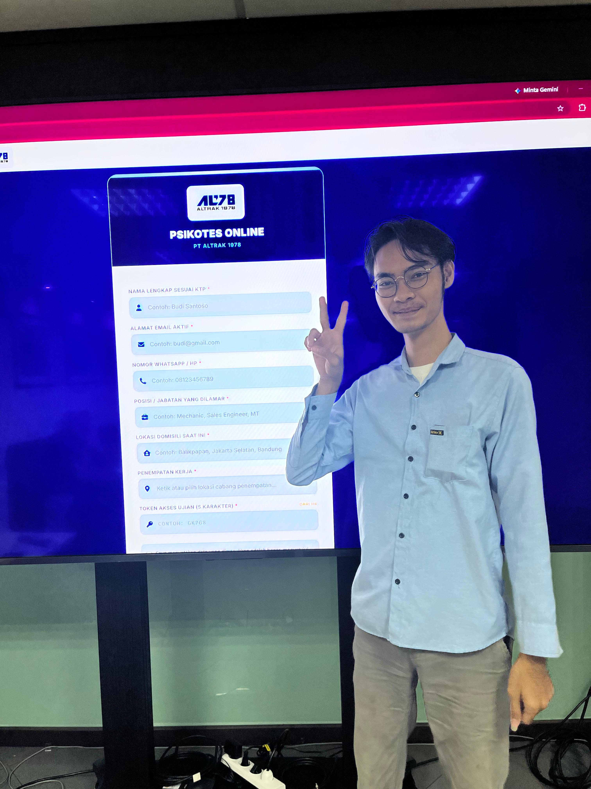
Sistem Portal Psikotes Online
SPA 12 Modul Ujian Terintegrasi PostgreSQL Supabase, Edge Function, & Webcam Proctoring
Latar Belakang & Pengalaman
Fokus pada pengembangan aplikasi web, perancangan database relasional, dan analisis alur sistem teknis.
Kapabilitas AI Engineer & System Analyst
Saya berfokus pada rekayasa kecerdasan buatan dan pemodelan sistem enterprise: memanfaatkan framework Antigravity untuk orkestrasi AI Agent mandiri dan alur kerja cerdas terotomasi, menerjemahkan kebutuhan operasional ke dalam diagram alir (Flowchart & DFD), mengelola arsitektur database relasional (PostgreSQL & Supabase), serta memimpin pengujian lapangan terpadu bersama pengguna.
Universitas Gunadarma
S1 Sistem Komputer (Sarjana Komputer)
Fokus riset & studi: Arsitektur Perangkat Lunak, Jaringan & Keamanan Sistem Komputer, Database Terdistribusi, serta Integrasi Hardware Embedded.
IST, CFIT, APM, TIU, Pauli, DISC, PAPI, dll.
Kompetisi robotik & seleksi rekrutmen live
Kalkulasi skor otomatis via server-side PostgreSQL
Lulus dengan predikat kehormatan Cum Laude
Pengalaman Kerja & Organisasi
Pengalaman membangun aplikasi pendukung operasional rekrutmen perusahaan dan mengelola kegiatan teknis laboratorium kampus.
PT Altrak 1978
Major Heavy Equipment DistributorWeb Developer & System Analyst (Proyek Rekrutmen)
Membangun aplikasi web psikotes dengan 12 sub-tes (IST, CFIT, APM, TIU, Pauli, DISC, PAPI, EPPS, MBTI, MSDT, DASS, Grafis) serta dashboard pemantauan peserta untuk tim HRD.
Merancang skema database relasional pada PostgreSQL (Supabase) dan membuat scoring function di sisi database agar kalkulasi nilai tes berjalan cepat dan tidak dapat dimanipulasi dari browser.
Menerapkan proteksi data peserta menggunakan Row Level Security (RLS), integrasi penyimpanan foto dokumen, serta modul pengawasan kamera otomatis selama tes berlangsung.
Mendampingi pelaksanaan uji coba aplikasi langsung di ruang meeting bersama tim HRD dan kandidat, mengumpulkan masukan pengguna, serta memperbaiki kendala tampilan dan koneksi.
Laboratorium Robotik & Multimedia
Universitas GunadarmaAsisten Laboratorium & Koordinator Teknis Lomba (ESC)
Mengelola alur pengembangan sistem praktikum dari perancangan arsitektur awal, perakitan perangkat, testing kalibrasi, hingga dokumentasi komprehensif bagi ratusan mahasiswa praktikan.
Menyusun diagram alir logika program, diagram blok arsitektur perangkat keras, dan SOP operasional modul embedded system berstandar akademik.
Mengembangkan robot OmniWheels berbasis Raspberry Pi (Flask & OpenCV face recognition), sistem sensor IoT ESP32 & desain PCB KiCad (Proyek K6), serta robot Wall Follower dan kendali nirkabel IMU.
Bertanggung jawab sebagai pimpinan teknis arena kompetisi, memimpin sesi evaluasi dan koordinasi parameter juri, serta briefing teknis kepada seluruh delegasi peserta.
Proyek yang Pernah Dikerjakan
Beberapa aplikasi dan sistem yang pernah saya bangun, baik untuk operasional perusahaan maupun kebutuhan riset/akademis.
Pengalaman Kerja & Sistem Produksi (Utama)
Aplikasi web skala produksi di PT Altrak 1978 dan sistem telemetri live TrackingMBG.id.
Portal Psikotes Online & Rekrutmen HRD
Platform rekrutmen produksi dengan 12 modul tes terpadu (IST, CFIT, APM, TIU, Pauli, DISC, PAPI, EPPS, MBTI, MSDT, DASS, Grafis). Dilengkapi webcam proctoring otomatis, skoring server-side PostgreSQL RPC, dan dashboard analitik HRD.
Executive Analytics & Data Warehousing Dashboard
Pipeline analitik evaluasi psikometri multidimensi dengan agregasi query PostgreSQL, normalisasi skor kandidat, visualisasi radar kompetensi, dan ekspor laporan PDF otomatis.
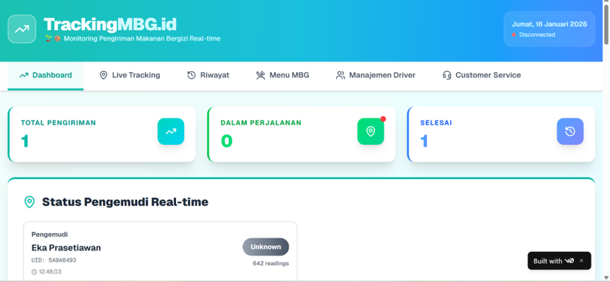
Monitoring & Tracking Logistik (Tracking MBG)
Sistem pengawasan logistik rantai dingin berbasis IoT: pelacakan koordinat GPS NEO-6M, telemetri suhu DHT21, validasi driver RFID RC522, dan arsitektur REST API ke dashboard live.
Masa Kuliah, Lab Robotika & Skripsi (2022–2026)
Riset tugas akhir IoT Fuzzy Logic serta proyek embedded, PCB KiCad, dan Raspberry Pi di Lab Robotik.
Prototipe Keamanan Ruangan IoT Smart Home & Fuzzy Logic
Skripsi S1 (2026): sistem keamanan Wemos D1 R1 dengan Fuzzy Logic Mamdani (Centroid) untuk status Aman/Waspada/Bahaya. Teruji pada RFID (0–3 cm), MQ-2 (12–2776 PPM), DHT21 (21,2–42,5°C), aktuator servo/relay, dan Blynk IoT.
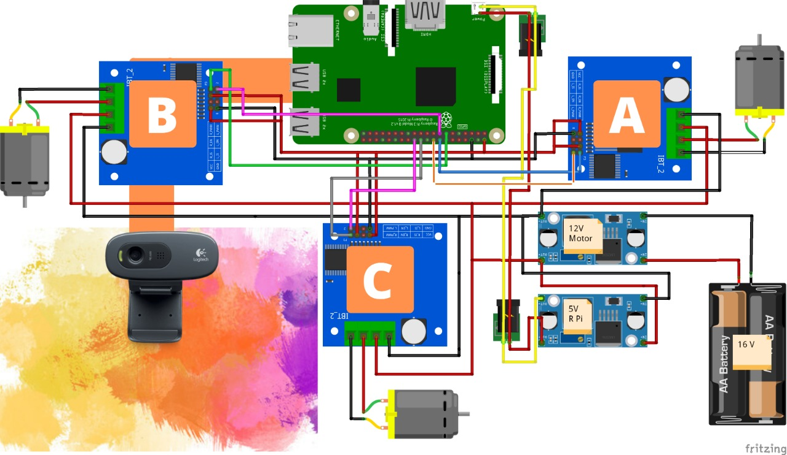
Robot OmniWheels Berbasis Raspberry Pi & OpenCV
Robot 3-roda OmniWheels berbasis Raspberry Pi dengan web controller Flask, live video stream, pengenalan wajah OpenCV (LBPH & Haar Cascade), dan kontrol motor via RPi.GPIO.
Proyek K6: Sistem IoT Sensor Lingkungan & PCB KiCad
Desain skematik & layout PCB sensor analog di KiCad hingga Gerber CNC, dipadukan firmware ESP32 (AsyncWebServer & LittleFS) untuk sensor DHT22, soil ADC, relay, dan ThingSpeak.
Robot Wall Follower, IMU, Modul & Kompetisi ESC
Pengembangan robot Wall Follower (3x ultrasonik NewPing), robot kendali nirkabel IMU (MPU6050 + NRF24L01), penyusunan modul Drone/Mikon/Robotika, serta koordinator teknis ESC.
Dokumentasi Kegiatan
Dokumentasi saat pengujian sistem di PT Altrak 1978 dan koordinasi teknis kompetisi robotika ESC.
Klik foto untuk memperbesar
Sosialisasi & Uji Coba Portal Psikotes Online — PT Altrak 1978
Implementasi sistem di ruang meeting, monitoring tes live para kandidat, dan verifikasi alur aplikasi
Presentasi UI Portal Psikotes di Depan Layar Meeting
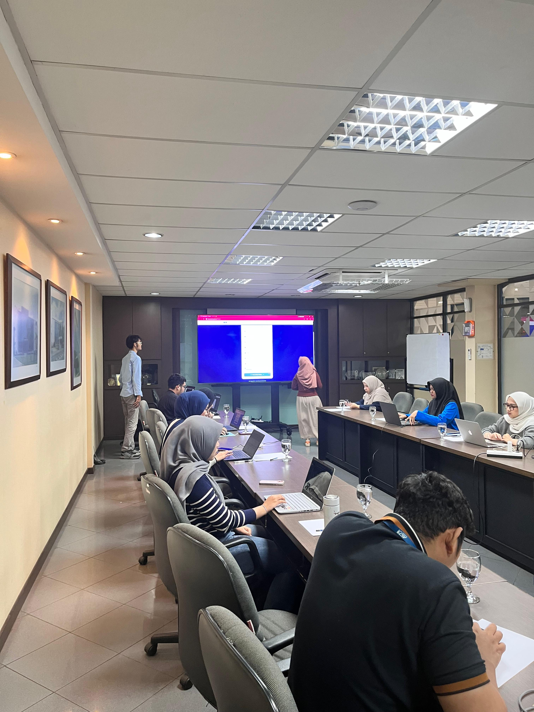
Monitoring Jalannya Ujian Online Para Peserta
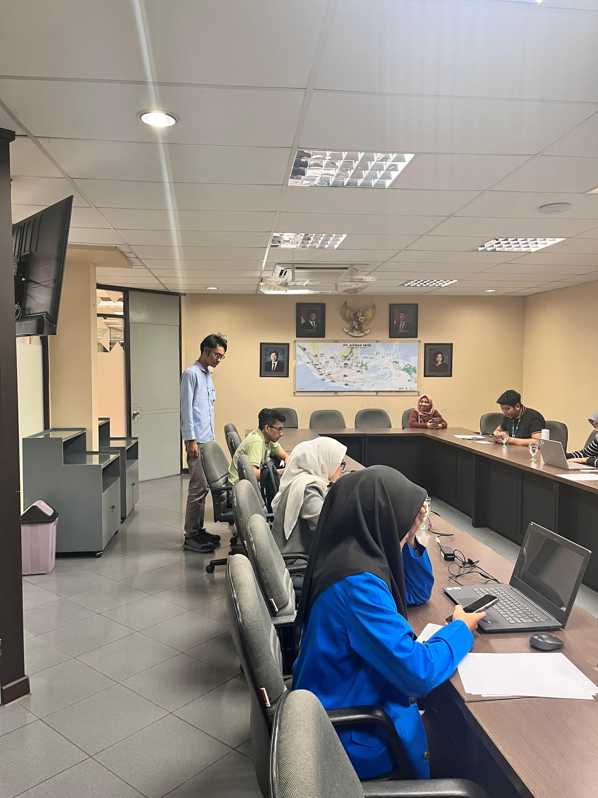
Pendampingan Pengoperasian Sistem Kepada Peserta
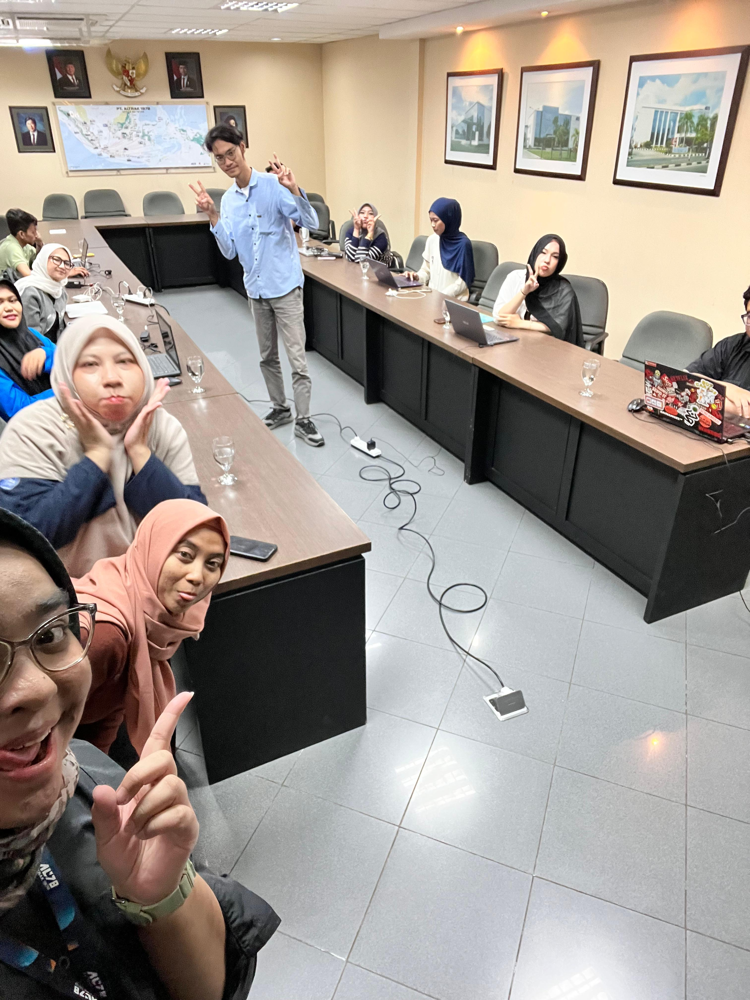
Sesi Evaluasi Feedback & Kebersamaan Tim Uji Coba
Kepemimpinan Embedded System Competition (ESC)
Pengarah teknis kompetisi maze-solver, koordinasi dengan juri, dan inspeksi standarisasi lintasan
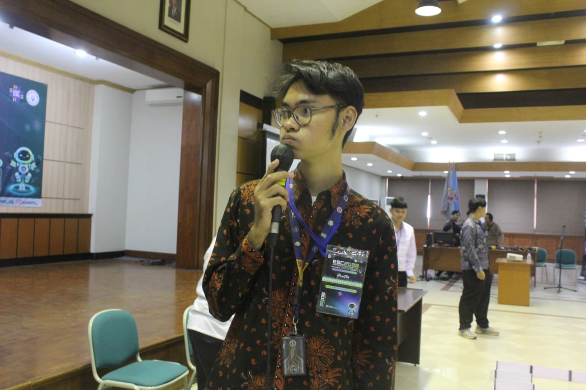
Membuka & Memberikan Pengarahan Kompetisi
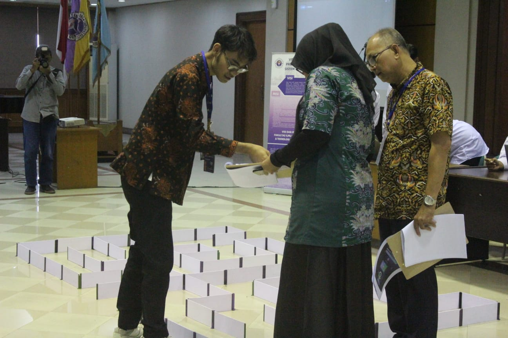
Penetapan Kriteria Penilaian Bersama Juri
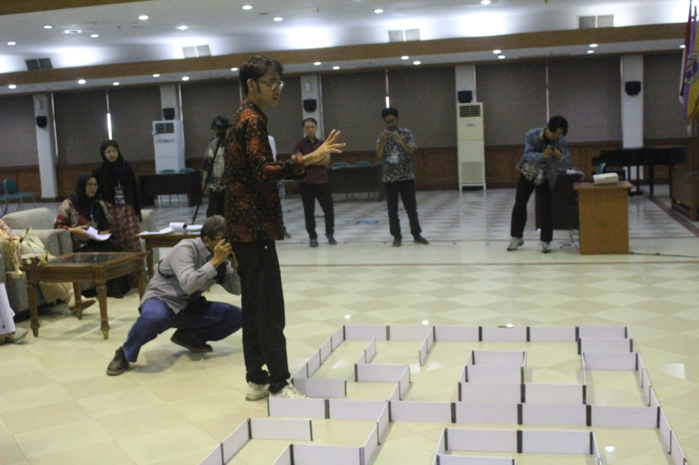
Inspeksi Standarisasi Dimensi Arena Labirin Robot
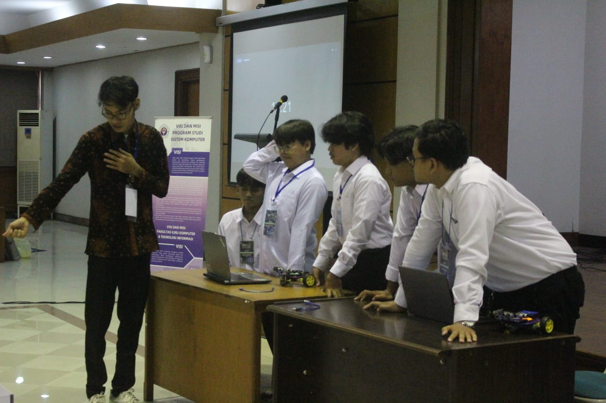
Penjelasan Regulasi & Alur Teknis Peserta
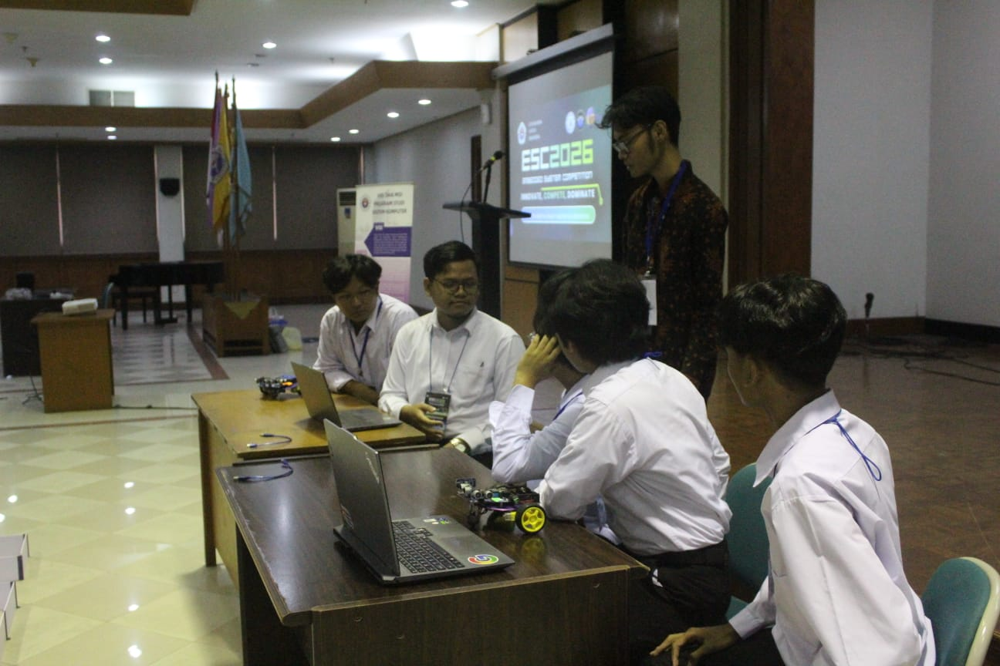
Inspeksi Hardware & Sensor Robotik Peserta
Proyek IoT & Sistem TrackingMBG.id
Prototipe hardware kotak logistik (ESP32, DHT21, RFID RC522, GPS NEO-6M), arsitektur sistem cloud API, dan dashboard monitoring real-time
Dashboard TrackingMBG.id — Monitoring Pengiriman & Status Pengemudi
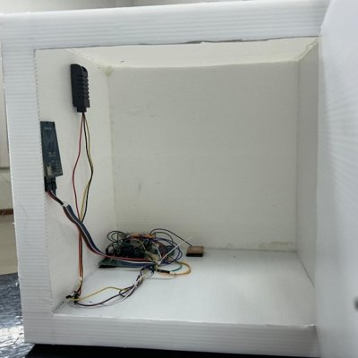
Rangkaian Sensor DHT21, RFID RC522, ESP32 & GPS NEO-6M pada Box
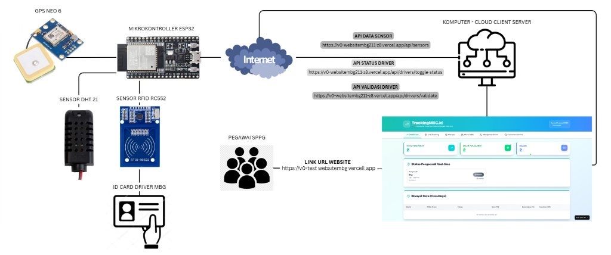
Arsitektur End-to-End Hardware ESP32, Cloud API & Pegawai SPPG
Kemampuan Utama & Kompetensi Teknis
Dikelompokkan secara profesional dari metodologi analisis proses bisnis, coding & database, modern tooling hingga soft skills.
Analisis & Dokumen Sistem
Business & Technical RequirementsMampu menjembatani kebutuhan divisi operasional/bisnis menjadi pemodelan arsitektur teknis terstandar industri.
Pemrograman & Data
Database & Application DevelopmentArsitektur database relasional, kueri analitik, manipulasi dataset, serta full-stack web engineering.
DevOps, AI Tools & Hardware
Deployment & Modern WorkflowsWorkflow otomatisasi modern, deployment cloud, integrasi AI tooling untuk akselerasi kerja, dan mikrokontroler.
Soft Skills & Leadership
Collaboration & Problem SolvingKemampuan komunikasi lintas disiplin, kepemimpinan koordinasi tim di bawah tenggat waktu, dan adaptasi cepat.
Pelatihan & Sertifikasi Profesional
17 sertifikat kompetensi resmi dari Dicoding Indonesia dan Universitas Gunadarma di bidang Software/AI, Robotik & IoT, serta Jaringan Komputer.
Creating Intelligent Systems on IoT Devices
Universitas Gunadarma • 2026
Perancangan sistem cerdas terintegrasi pada perangkat IoT dan aktuator.
Embedded System Programming Microcontroller
Universitas Gunadarma • 2025
Perancangan dan pemrograman sistem tersemat berbasis mikrokontroler.
Design Prototype Electronic Circuit on Protoboard
Universitas Gunadarma • 2025
Perancangan dan pengujian prototipe rangkaian elektronika di protoboard.
Microcontroller Systems
Universitas Gunadarma • 2025
Arsitektur mikrokontroler, I/O sensor, aktuator, dan antarmuka perangkat keras.
K3 Procedures & Electronic Components
Universitas Gunadarma • 2025
Prosedur keselamatan kerja laboratorium (K3) dan karakterisasi komponen elektronika.
Drone Systems & Robotics
Universitas Gunadarma • 2023
Perakitan, kalibrasi flight controller, dan kendali sistem drone.
Building Website using HTML5
Universitas Gunadarma • 2025
Pengembangan antarmuka web modern berstandar HTML5 semantik dan responsif.
Belajar Dasar AI
Dicoding Indonesia • 2024
Konsep dasar kecerdasan buatan, machine learning, dan pemanfaatan AI modern.
Belajar Dasar Data Science
Dicoding Indonesia • 2023
Pengolahan dataset, statistik deskriptif, dan visualisasi data analitis.
Belajar Dasar SQL
Dicoding Indonesia • 2023
Pemodelan relasional, kompleksitas JOIN, dan optimasi query database.
Memulai Dasar Pemrograman Software
Dicoding Indonesia • 2023
Logika pemrograman terstruktur, algoritma dasar, dan praktik software engineering.
Belajar Dasar Manajemen Proyek
Dicoding Indonesia • 2023
Siklus manajemen proyek TI, perencanaan ruang lingkup, dan manajemen risiko.
Computer Networks Security
Universitas Gunadarma • 2024
Keamanan infrastruktur jaringan, firewall, dan protokol proteksi sistem.
Addressing & Routing in Computer Networks
Universitas Gunadarma • 2024
Pengalamatan IP, subnetting, dan konfigurasi routing protokol TCP/IP.
Computer Networks Connectivity
Universitas Gunadarma • 2023
Konektivitas jaringan, konfigurasi switch/router, dan pemecahan masalah koneksi.
Computer Networks Requirement Identification
Universitas Gunadarma • 2023
Analisis kebutuhan topologi, perangkat, dan perencanaan arsitektur jaringan.
Aptitude Test
Universitas Gunadarma • 2026
Evaluasi potensi skolastik, penalaran analitis, dan kesiapan karier profesional.
Tertarik berkolaborasi atau mendiskusikan peluang kerja?
Saya terbuka untuk peluang kerja di bidang IT — baik sebagai AI Engineer, Web Developer, System Analyst, maupun program Management Trainee. Silakan unduh CV saya atau hubungi melalui WhatsApp dan email.
Curriculum Vitae Resmi Febriyan Nanda Saputra
Format: PDF • ATS-Friendly • Portofolio & Pengalaman Terkini